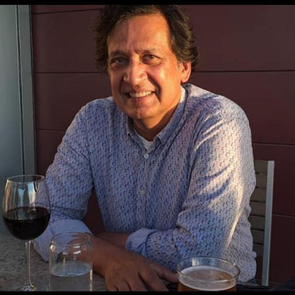

Bihari Art
Tabish Khair
Rumi and the Reed
Listen to the song of the reed flute:
It sings of separation.
Torn from the leaf-layered, wind-voiced
Banks of the pond,
It is joined to sorrow and joy
By a slender sound.
Who, asked Rumi, can understand
The reed's longing to return?
Let its raw lips rest then;
Let all words be brief then.
And I, O Believers, cried Rumi
(Having lost the man he loved),
I who am not of the East
Nor of the West, un-Christian,
Not Muslim or Jew, neither
Born of Adam nor Eve,
What can I love but the world itself,
What can I kiss but flesh?
Let my raw lips rest then.
Let all words be brief.
(From WHERE PARALLEL LINES MEET, Penguin, 2000)
Falling
1.
What she felt most of all was a sensation of weightlessness
And something building up in her head like wet sponge:
The difference between mass and weight, a technical matter
Future generations would discover, forget, insist on, knowing
Well that in their world they differed only in the word.
In the beginning had been the word, sharp, mocking, male,
And then things really started happening. First Adam's smile
Cracked, then pieces of heaven floated by like memories of cloud.
It was then she discovered the difference between weight and mass
And sank into the couch of weightlessness. The blue ball
Of Earth whistled close, tattooed with white lines of water and spots.
When she saw the first trees stretching forth their arms in yearning
Like small lip-sticked girls outside the concert hall of a pop star,
When she saw how closely this had been made to remind her of that,
The heavenly sameness that was touched by differences of definition,
She felt the full sucking force of God's jealousy in this weightlessness
And continued to fall, for the first time thinking furiously.
2.
It is precision bombing of sorts, this falling on the spot,
Just inside the railings of Homebase carpark, just outside
A DIY superstore in Richmond, London. BVRs
And smart bombs couldn't have been smarter.
At three angels when the 777 unfurled the claws
Of its 12 wheels what fell out was not met with shouts
(Though it could have been) of bogey, bandit, body.
It had crossed like the shadow of a swooping bird
In the back-view mirror of a busily backing Mercedes,
A workman at nearby Heathrow airport had looked up,
And seen something amazing, a boy falling out of the sky.
How he had homed in finally like an Air-Launched,
Anti-Radiation Missile on the target of his heated
Imagination (they used to call it dreams): billboards,
Cars, trolleys, broad avenues, a supermarket;
To sit tucked under a tree like a morning drunk,
The weight of his fallen hopes a lumpy mass,
His brains spreading around him like vomit.
Peasant whose parents packed him no sage advice
(Like: at 14,000 feet even blood turns to ice),
Mohammad Ayaz, wheel-bay contortionist,
Flying by wire, freezing to death a few feet
From gin and tonic being served to passengers
Settling down to watch the in-flight movie,
Insulated against the beast-whistle of space.
When he began to hallucinate for lack of O2
Did he see cars, avenues, green dollars? Could
He distinguish between those dreams and these?
Or did he see in the cramped space allowed him
The ghosts of those who had crouched before him,
Chaffing their hands against strips of metal –
Vijay Saini, or the unknown body that fell
And disappeared into a building reservoir,
Something taking them up worlds apart,
Something dragging them down the same place.
Look, Reader, look up:
It is raining frozen bodies all over Europe.
(from MAN OF GLASS, HarperCollins, 2010)
Rajesh Khanna in Iowa City
His caterpillar eyebrows above the flutter of his butterfly lashes
Is something that only a generation understood:
My aunts who swooned at his image on the big screen,
The mirror men who combed their brilliantined hair like him.
It was almost lost on us as it is lost on you. He will be lost here.
And if I walk into a crystal class with a copy of Moby-Dick,
I know I will be the only one defending the turgidity of Melville's narrative,
The pages the narrator spends fearing a "head-hunter"
Who turns out to be a friend, and the stolid sections on whaling
In a book where the whale remains unknown and uncaptured.
There was this young lady in a Business English class I taught,
Dressed impeccably like a frosty dawn, who said in perfect English,
"Why did you choose Heart of Darkness? It is such a disappointing book.
Nothing happens in it. He does not even manage to rescue Kurtz."
What then do we now make of Tansen's voice lighting candles and lamps?
By the time the stolen cat is found in its owner's basement,
Two migrants have already been roughed up for eating it,
And the fate of all elections in the world sealed.
Meanwhile, even as she struggles to give birth in Gaza,
Even as he bears the broken body of his son to a shelter,
Even as they share the last bread, alert for bomb whistle,
On both sides here, it is a matter of such consequence,
We have to get the pronouns (he, she, they) right.
Oh well, whoosh, says the teenager in Tivoli,
Who has been on bigger rides in bigger parks.
Oh well, whoosh, says the post-modern poet.
Oh well, whoosh, is what people say on roller-coaster rides,
Where there is much speed, and many valleys and peaks,
But no mangled smoking train compartment at the end of the track.
Meanwhile, I sit at the corner tavern ordering happy-hour oysters,
And the roads dissect each other at sharp right angles here,
Soon other writers will join me for beer and small talk,
And I won't mention to them anything of significance to me,
Maybe gesture at a genocide or two, some political atrocity,
But never talk of Rajesh Khanna's butterfly lashes and caterpillar brows.
(New and unpublished)
CONTENTS

ABOUT THE ARTIST
Born (1966) in Ranchi and educated up to his MA in Gaya, Bihar, Tabish Khair did a PhD
from Copenhagen University and is now an associate professor at Aarhus University,
Denmark. His scholarly books include Babu Fictions (OUP, 2001), The Gothic,
Postcolonialism and Otherness (Palgrave, 2009), Literature against Fundamentalism (OUP,
2024) and the co-edited anthology, Other Routes: 1500 Years of African and Asian Travel
Writing (Indiana UP, 2005).
He is also an award-winning poet and novelist. His recent novels are Just Another Jihadi
Jane (published as Jihadi Jane in India), A Body by the Shore and Night of Happiness. He
has completed a new novel, Drown all the Refugees, scheduled to be published by
HarperCollins in late 2026.